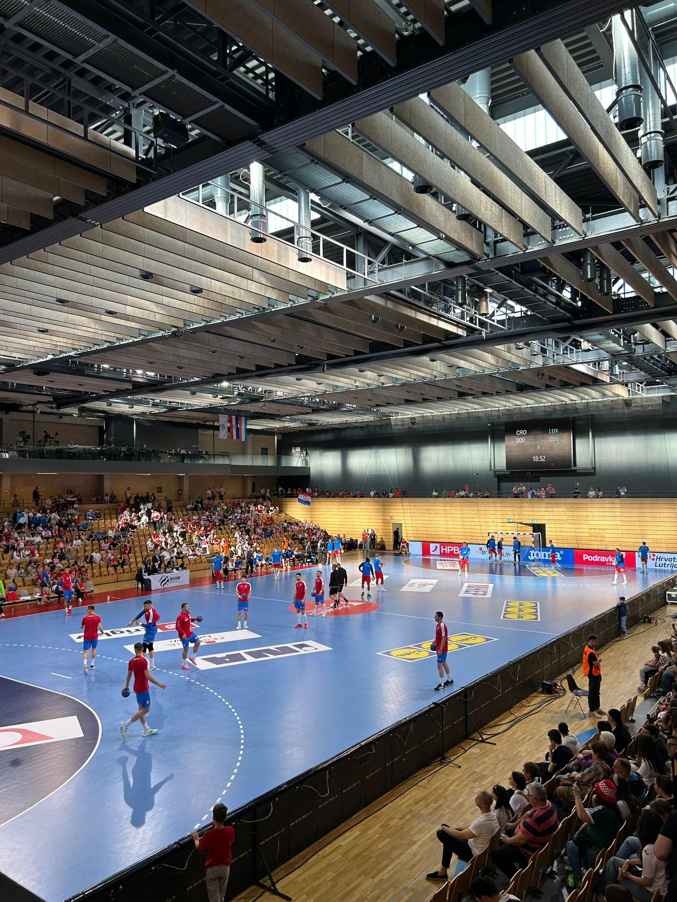

Rijeka se može pohvaliti bogatom sportskom scenom, a rukomet zauzima posebno mjesto u srcima mnogih Riječana. Grad je ponosan na svoje sportaše, trenere i navijače koji s velikom strašću prate sportska zbivanja.
Rukometni klub Zamet osnovan je 1957. godine i od tada je postao jedan od simbola riječkog sporta. Klub je poznat po razvoju mladih talenata, a iz njegovih redova potekli su brojni reprezentativci. RK Zamet se natječe u najvišim ligama i redovito privlači pozornost ljubitelja rukometa u cijeloj regiji.
Rukometni klub Zamet ima snažan omladinski pogon i jasno strukturirane dobne skupine. Najmlađi članovi treniraju u kategoriji U-9, koja uključuje djecu rođenu između 2015. i 2017. godine, dok U-11 okuplja djecu rođenu 2013. i 2014. godine. Treninzi se održavaju dva do tri puta tjedno u školskim i sportskim dvoranama, a svaki novi član ima pravo na besplatan probni period od 30 dana. Informacije o članarinama nisu javno navedene, no dostupne su putem izravnog kontakta s klubom.
 Službena stranica kluba